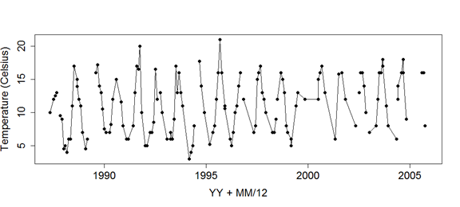
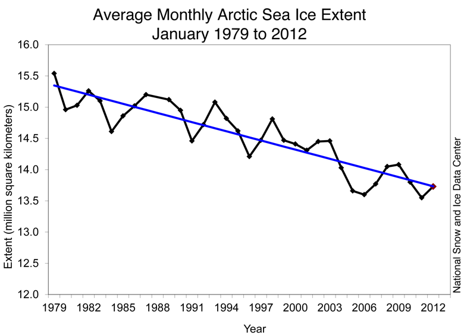
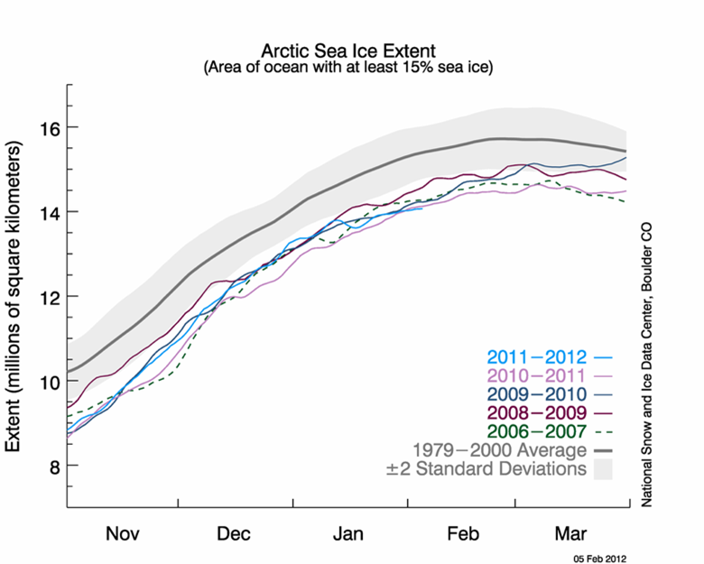
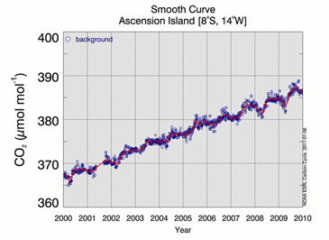
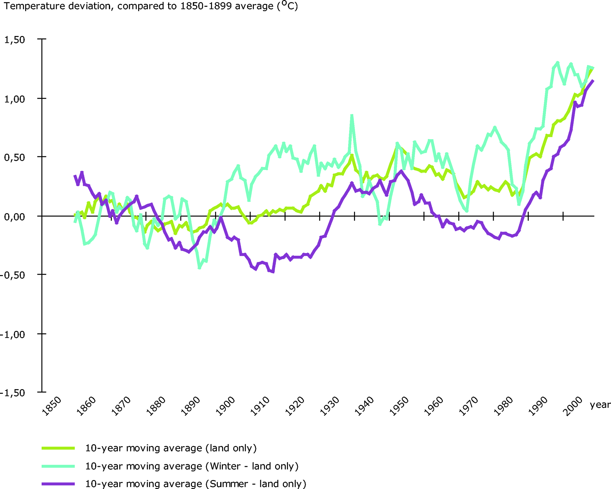
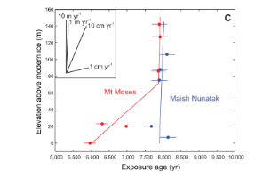
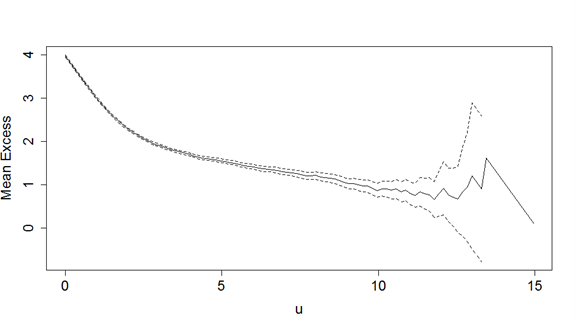
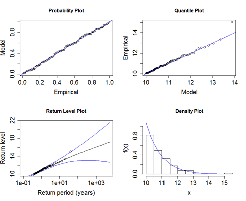
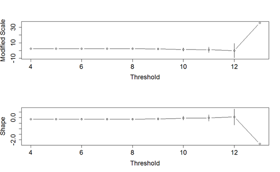

Tutorial Sheet 2
1 Part A: Seasonal and trend analysis.
Several of these examples are similar in nature to exam questions, in that you are asked to comment on statements being made or on analysis already completed.
It is of interest to look at temperature records in Loch Lomond and to consider what the trend might be in water temperature. The data shown here are for Cailness in the north basin of the Loch. Comment on the patterns over time in this record. What other plots might you look at and how might you model this data to investigate the changes in temperature over time. There are some missing data values which you might consider how to impute.

Temperature records- here the approach since we have approximately monthly data requires both a trend and seasonality term, since we expect that temperature will be seasonal. This is a very similar problem to what we will look at with the Central England temperature record, in the lab. I would expect to see a time series plot of these data (with time expressed as year.decimal part of the year), and a seasonality plot, where each temperature is plotted against position within the year. This latter plot will for sure show a seasonal cycle and we could easily imagine fitting some sort of sin/cosine curve to this, hence the idea to use a harmonic regression. However we also have a problem in that there is some missing data, and so as a discussion point we could consider how best to impute these missing values.
Imputation rules (this again would be more typical of an exam style question): Possible answers here could range from replacement by a simple average of the values surrounding the missing value, to a more complex approach which would also use the seasonal signal (e.g. if the value was missing in January 2006, you could replace the missing value by the average of the January 2005 and Jan 2007 values). You could also use the fitted sine/cosine seasonal curve as a tool for imputation.
You could be asked to look at the original equation for the harmonic regression (which is non-linear in the params) and show how it can be linearised (straight from the notes).
The following excerpts are taken from the National Snow and Ice Data Centre (NSIDC) site, concerning arctic sea ice:
Statement 3a
“Arctic sea ice extent in January 2012 averaged 13.73 million square kilometers (5.30 million square miles). This is the fourth-lowest January ice extent in the 1979 to 2012 satellite data record, 1.10 million square kilometers (425,000 square miles) below the 1979 to 2000 average extent. Including the year 2012, the linear rate of decline for January ice extent over the satellite record is 3.2% per decade. Based on the satellite record, before 2005, average January ice extent had never been lower than 14 million square kilometers (5.41 million square miles). January ice extent has now fallen below that mark six out of the last seven years.”
Statement 3b
“The growth rate for Arctic sea ice in January was the slowest in the satellite record. After growing relatively quickly early in January, ice extent declined briefly in the middle of the month, and then grew more slowly than normal for the rest of the month. Overall, the Arctic gained 765,000 square kilometers (295,000 square miles) of ice during the month. This was 545,000 square kilometers (210,000 square miles) less than the average ice growth rate for January 1979 to 2000.”


Discuss critically the two statements above concerning the 2012 sea-ice making reference to Figures 3.1 and 3.2, specifically the decrease per decade. Comment on the statistical methods and assumption which could be used to fit the models shown in the Figures. How would you interpret Figure 3.2 in terms of the comparison of the 5 curves shown to the 1979-2000 average curve?
Statement 3a, several aspects to comment on, the most straightforward concerns the linear rate of decline (3.2% per decade), no uncertainty mentioned. Fig 3.1, shows the straight line fit and the fluctuations around the line (why no uncertainty bands?). The second aspect to comment on really is about the rank information, fourth lowest, and January ice extent fallen below 14 million km\(^2\) 6 out of last 7 years (these latter comments would be picked up when we discuss extremes in the next section of the lectures). Figure 3.2 shows several curves, including a global average curve and its standard deviation band and then the curves for individual decades. We can see that several of the decade curves lie outside the grey bands, all are below the mean curve.
Carbon dioxide concentrations are routinely measured at many places around the globe- one such data set is shown below with also some text describing how the plot and smooth curve was produced.
“To reduce noise in the determination of the global estimate due to atmospheric variability and measurement gaps, we fit a smooth curve to the weekly measurements.
To approximate the long-term trend and average seasonal cycle at a site, a function of the form
\[S(t) = \alpha_o + \alpha_1 t + \alpha_2 t^2 + \sum_{k=1:4}\left[b_{2k-1} \text{sin}(2\pi kt) + b_{2k} \text{cos}(2\pi kt)\right]\]
is fitted to the measurements [Thoning et al., 1989]. The above function includes 3 polynomial parameters (quadratic) and 8 harmonic parameters, associated with the sine and cosine terms which can be converted to amplitude and phase of each harmonic, if desired.”
Figure 4 shows the smooth curve, \(S(t)\), in red fitted to weekly background CO2 measurements from Ascension Island for 2000-2009.
Discuss the approach described in the statement concerning Figure 4 to quantify trend.

Critically, we have time series data, there are gaps, so a smooth curve is fitted, using a quadratic as in the equation. However there is also a need to include some cyclical terms, again introduced in the linear modelling framework using sin and cosine terms. Very standard regression modelling, but could and should also pick up on the fact there is no mention of the error terms or assumptions and since this is time series, we could expect that observations at a weekly scale are correlated, and what effect that might have on the estimates and any inference – i.e. less independent data so we might expect the standard estimates of our parameters to increase. An alternative approach may be to use a more flexible method (e.g. smoothing/GAM) to incorporate the seasonal pattern but with a linear term for trend. Models could be compared using an approximate F test. The advantage of the parametric approach adopted is the (relative) ease of interpretation.
A researcher monitors monthly water temperature (°C) at a river station over 8 years (\(n=96\) observations, \(t = 1,\ldots,96\)). Water temperature in rivers is well known to follow an annual seasonal cycle driven by air temperature and solar radiation. Thus, the research fits the harmonic regression model to the river temperature data:
\[ \mathbb{E}(Y_t) = \beta_0 + \beta_1\cos\left(\frac{2\pi t}{P}\right) + \beta_2\sin\left(\frac{2\pi t}{P}\right) \] with the following R output:
lm(formula = temp ~ cos(2 * pi * t/P) + sin(2 * pi * t/P))
Coefficients:
Estimate Std. Error t value Pr(>|t|)
(Intercept) 12.430 0.187 66.47 <2e-16 ***
cos(2 * pi * t/P) -4.216 0.264 -15.97 <2e-16 ***
sin(2 * pi * t/P) 2.850 0.264 10.79 <2e-16 ***
---
Residual standard error: 1.826 on 93 degrees of freedom
Multiple R-squared: 0.834, Adjusted R-squared: 0.830
F-statistic: 233.6 on 2 and 93 DF, p-value: < 2.2e-16
Answer the following:
- What value of
P(i.e., the period) was used in this model? - State the fitted regression equation
- Calculate the amplitude of the seasonal cycle.
- P = 12 months — data is monthly and one full annual cycle spans 12 observations.
- \(\widehat{\text{temp}}_t = 12.430 - 4.216\cos(2\pi t/12) + 2.850\sin(2\pi t/12)\)
- \(\sqrt{(-4.216)^2+2.85^2} \approx 5.09.\)
The following excerpt is taken from the European Environment Agency web site, concerning one of their key indicators (CSI012) for European temperature (accessed Jan 2010):
“The Earth has experienced considerable temperature increases in the last 100 years, especially in the most recent decades. These changes are unusual in terms of both magnitude and rate of change. The rate of change in the global average temperature is accelerating from 0.08\(^\circ\)C per decade over the last 100 years, to 0.13\(^\circ\)C per decade over the past 50 years up to 0.23\(^\circ\)C per decade over the last 10 years (all values represent land & ocean area) (IPCC, 2007a). As such the indicative target (to keep climate change within ‘safe’ limits) of 0.2\(^\circ\)C per decade has been exceeded in the recent years.”
The figure below shows the time series plot of the CSI012 indicator, which has been developed to address specific policy issues concerning the trend and rate of change in the European annual and seasonal temperature.

Discuss critically the statement and the above figure and how they might be related. Suggest how you might model such temperature data above to address the policy issues.
This example is again all about trends, expressed one presumes as a linear trend, and a slope in the quote. The interesting thing is that the slope is different in different time periods and over different lengths of time. Again, no uncertainty is quoted. The plot shows deviations using a 10 year moving average, so a smoothed plot, and we can also see differences between summer and winter, suggesting temperature change may indeed be occurring at different rates in different times of the year. How might we model absolute temperature and the deviations? We can certainly imagine therefore that temperature will have a strong seasonal cycle (so could use a harmonic regression), that a simple linear regression is not likely to be complex enough since the rate of change is changing, so could fit some sort of piecewise regression but what is the justification for the changepoints? Or we could fit some sort of smooth curve (not necessarily monotonic).
Suppose the following change point detection model of the form
\[Y_i = \alpha_1 + \beta_1x_i - (\beta_1-\beta_2)(x_i-c)_+ + \varepsilon_i\] where \((x - c)_+ = \begin{cases} 0 & \text{if } \ x < c\\ x- c & \text{if } x \geq c \end{cases}\)
Show that
- When \(x_i < c\), \(\mathbb{E}(Y_i) = \alpha_1 + \beta_1x_i\)
- When \(x_i \geq c\), \(\mathbb{E}(Y_i) = \alpha_2 + \beta_2 x_i\) such that \(\alpha_2 = \alpha_1 + (\beta_1 - \beta_2)c\)
- when \(x_i < c\), \(\mathbb{E}(Y_i) = \alpha_1 + \beta_1x_i - (\beta_1-\beta_2)\overbrace{(x_i-c)_+}^{0} = \alpha_1 + \beta_1 x_i\)
- When \(x_i \geq c\),
\[ \begin{align} \mathbb{E}(Y_i) &=\alpha_1 + \beta_1x_i - (\beta_1-\beta_2)(x_i-c)\\ &=\alpha_1 + \beta_1x_i - \beta_1x_i+ \beta_1 c +\beta_2 x_i - \beta_2 c\\ &=\alpha_1 + \beta_1 c - \beta_2 c + \beta_2 x_i \\ &=\alpha_1 + c (\beta_1 - \beta_2) + \beta_2 x_i \quad \color{grey}{\text{setting } \alpha_2 = \alpha_1 + c (\beta_1 - \beta_2)} \\ &= \alpha_2 + \beta_2 x_i \end{align} \]
The figure below shows a regression example from a paper in Science (Johnson et al, 2014) which investigated the rate of thinning of the Pine Island glacier. They fit a 2-segment, piecewise-linear age-elevation history to the Mt Moses dat.

Explain what the phrase in bold above means, and write down the equation for a 2 stage regression, assuming a known changepoint. Explain how the parameters of the model can be estimated. Comment briefly on the figure above.
The model that the authors have fitted is one where there are two straight lines which are constrained to meet at a changepoint.
A change-point could be defined as a point that separates a series of observations into two groups, each following a different model, in this case a different slope and intercept.
Known changepoint:
\[f(x_i) = \begin{cases} \alpha_1 + \beta_1x_i \hspace{1cm} x_i\leq \delta\\ \alpha_2 + \beta_2 x_i \hspace{1cm} \delta \leq x_i \end{cases}\]
constrained such that
\[\alpha_1 + \beta_1 \delta = \alpha_2 + \beta_2 \delta\]
Parameters can then be estimated by ordinary least squares. Plot shows the diverging line, no uncertainty estimates, nor justification of where the changepoint occurs.
2 Part B: Models for extremes
If \(X_1, \dots, X_n\) is a sequence of independent standard exponential \(Exp(1)\) variables,
- Show that \(F(x)= 1-e^{-x}\) for \(x> 0\).
- Show that, for \(a_n=1\) and \(b_n=\log(n)\), the limit distribution of \(M_n\) as \(n \rightarrow \infty\) is the Gumbel distribution, corresponding to \(\zeta = 0\) in the GEV family.
If \(X_1, \dots, X_n \sim Exp(1)\),
- range of \(x\) is \(X>0\)
- pdf of \(Exp(\lambda)\) is \(f(x) = \lambda e^{-\lambda x}\), so for \(Exp(1)\), \(f(x) = e^{-x}\)
\[\begin{split}\therefore F(x) &= P(X \leq x)\\ &= \int_0^x f(t) dt\\ &= [-e^{-t}]_0^x\\ &= -e^{-x} - (-e^0)\\ &= 1 - e^{-x} \hspace{1cm} (\text{for } x>0)\end{split}\]
- Let \(M_n = \max\{X_1, \dots, X_n\}\), let \(a_n = 1\) and let \(b_n = \log(n)\). Then:
\[Pr\left\{\frac{M_n - b_n}{a_n} \leq z \right\} = F^n(a_nz + b_n) \rightarrow G(z) \text{ as } n \rightarrow \infty\] \[\begin{split} F_n(a_nz + b_n) & = F^n(z+\log(n))\\ & = [1 - e^{-(z+\log(n))}]^n\\ &\rightarrow \left[1-\frac{e^{-z}}{n} \right]^n \ \text{ as } n \rightarrow \infty\\ &= -\exp(-\exp(-z))\end{split}\]
Note: \[\exp(x) = \lim_{n \rightarrow \infty}\left( 1+\frac{x}{n}\right)^n \ \ \ \ \ \ \ \ \]
If \(X_1, \dots, X_n\) is a sequence of independent standard exponential \(Exp(\lambda)\) variables,
- Show that \(F_n(x)= (1-e^{-\lambda x})^n\) for \(x> 0\), where \(F_n(x)\) is the distribution of \(X(n)\).
- Find the distribution function of \(X_{(1)}\), and show that \(X_{(1)}\) has an Exponential distribution with parameter \(n\lambda\).
- \(F(x) = 1 - e^{-\lambda x}\)
\[\begin{split} F_n(x) &= [P(X \leq x)]^n\\ &=\left[ \int_0^x f(t) dt\right]^n\\ &=\left[\int_0^x \lambda e^{-\lambda t} dt \right]^n\\ &=\left[ \left[ e^{-\lambda t}\right]_0^x\right]^n\\ &=\left[ 1 - e^{-\lambda x}\right]^n \end{split}\]
- Let \(X_{(1)} = \min\left\{X_1, \dots, X_n \right\}\). Then:
\[\begin{split} \Pr\left\{ X_{(1)} \leq t\right\} &= \Pr\left\{ \min\left\{X_1, \dots, X_n \right\} \leq t\right\}\\ &= 1 - \Pr\left\{ \min\left\{X_1, \dots, X_n \right\} \geq t\right\}\\ &= 1 - \Pr \left\{ X_i \geq t \ \text{for all} \ i\right\}\\ &= 1 - (e^{-\lambda t})^n\\ &= 1 - e^{-\lambda nt} \end{split}\] \[\therefore X_{(1)} \sim Exp(n \lambda)\]
- Daily wind speed data are available for a location in the Netherlands. A POT modelling approach has been used to model the data. The figure below shows a mean residual life plot for the series. Comment on how you could use this plot to identify a suitable threshold for the POT model. What threshold would you select here?

- The figure below shows the diagnostic plots for a fitted POT model for the wind speed data. Comment on the model fit using these plots.

- The threshold selected was 10. Comment on this choice using the sensitivity analysis below.

- The R output for the model is shown below.
$threshold
[1] 10
$nexc
[1] 105
$conv
[1] 0
$nllh
[1] 92.17218
$mle
[1] 0.9278907 -0.0473220
$rate
[1] 0.00684485
$se
[1] 0.12364549 0.09084164Estimate the 1 in 100 year wind speed.
Looking for area where (after taking confidence bands into account) the mean excess is linearly related to the threshold. Not immediately obvious, somewhat subjective. I would say somewhere between 10 and 13. Start as low as possible so 10 would be a good threshold to start with.
Quantile and probability plots both have good agreement between points (corresponding to the sample) and the theoretical line, therefore the fit seems reasonable. Histogram also seems to have good agreement between the sample and the solid line which represents the estimated density using the fitted model. Have to be careful when interpreting histograms as interpretation can change with the number of bins used, particularly when the sample size is small. Return level plot, points lie within confidence interval in general. Another indication the model is suitable.
The threshold value of 10 seems like a good threshold. There is very little variability in the sensitivity analysis fit, the parameter estimates seem constant across a range of thresholds, only at 12 and above do estimates seem to vary. Maybe could argue we could look at thresholds even lower than 10 —- need to balance what is truly extreme, while ensuring there is sufficient data available above the threshold to use to estimate our model.
The generalized extreme value distribution (GEV) has three parameters and distribution function
\[G(z) = \exp \left\{ -\left[ 1+\xi\frac{(z_i - \mu)}{\sigma}\right]^{\frac{-1}{\xi}}\right\}\]
GEV is often used when modelling block maxima. Identify the particular family and write down its distribution function when \(\xi\) is assumed equal to 0.
Show that when \(G(z_p) =1-p\), then
\[z_p = \begin{cases} \mu - \sigma \frac{[1-\{-\log(1-p)\}^{-\xi}]}{\xi} & \text{for } \xi \neq 0\\ \mu - \sigma[\log\{-\log(1-p)\}] & \text{for } \xi = 0\end{cases}\]
For the distribution \(G\) in the case \(\xi=0\), show that if \(z_p\) is plotted against \(\log[–\log(1-p)]\), the plot should be linear.
\[G(z) = \exp \left\{ -\left[ 1+\xi\frac{(z - \mu)}{\sigma}\right]^{\frac{-1}{\xi}}\right\}\]
Set \(G(z_p) = 1 - p\) and solve equation above for \(z_p\):
\[\begin{split} \exp \left\{ -\left[ 1+\xi\frac{(z_p - \mu)}{\sigma}\right]^{\frac{-1}{\xi}}\right\} &= 1 - p\\ \left\{ -\left[ 1+\xi\frac{(z_p - \mu)}{\sigma}\right]^{\frac{-1}{\xi}}\right\} &= \log(1-p)\\ -\left[ 1+\xi\frac{(z_p - \mu)}{\sigma}\right] &= \log(1-p)^{-\xi}\\ \left[ 1+\xi\frac{(z_p - \mu)}{\sigma}\right] &= -\log(1-p)^{-\xi}\\ \xi\frac{(z_p - \mu)}{\sigma} &= \{ -\log(1-p)^{-\xi}\}-1\\ \frac{(\mu - z_p)}{\sigma} &= \frac{1}{\xi}[1-(-\log(1-p)^{-\xi})]\\ -z_p &= -\mu + \frac{\sigma}{\xi}(1-(-\log(1-p)^{-\xi}))\\z_p &= \mu - \frac{\sigma}{\xi}(1-(-\log(1-p)^{-\xi}))\end{split}\]
When \(\xi = 0\), we have a Gumbel distribution:
\[\begin{split}\exp\left[ -\exp\left( \frac{-(z_p - \mu)}{\sigma}\right)\right] &= 1-p\\ \left[ -\exp\left( \frac{-(z_p - \mu)}{\sigma}\right)\right] &=\log(1-p)\\ \left( \frac{-(z_p - \mu)}{\sigma}\right) &= \log(-\log(1-p))\\ -z_p + \mu &= \sigma\log(-\log(1-p))\\ -z_p &= -\mu + \sigma\log(-\log(1-p))\\ z_p &= \mu - \sigma\log(-\log(1-p))\end{split}\]
\(z_p\) is the return level associated with the return period \(1/p\).
Let \(s_p = \log(-\log(1-p))\). Then \(z_p = \mu - \sigma\log(-\log(1-p)) = \mu - \sigma s_p\) when \(\xi = 0\). Therefore, \(z_p\) is linearly related to \(\log(-\log(1-p))\) in the case \(\xi = 0\).
Module 2 Module 2 Notes Week 4 - Assessing Change Over Time /notes/notes_1.html Week 5 - Autocorrelation & Changepoints /notes/notes_2.qmd Week 6- Modelling Extremes /notes/notes_3.qmd Slides /slides/change_points.pdf /slides/Week_5.pdf Week 6 - Modelling Extremes /slides/slides_6.html Tutorials Tutorial sheet 2 /notes/tutorial_sheet_2.html Tutorial sheet 3 /notes/tutorial_sheet_3.qmd Labs Lab 2 /lab_2.qmd Reading List /reading_list.qmd Home /index.html
Tutorial Sheet 2 – Module 2 Tutorial Sheet 2 – Module 2 Tutorial Sheet 2 – Module 2 Module 2